df <- read.csv("vis-decode-slider_all_tidy.csv") %>% as_tibble(.)
df %>% count(participantId)Preliminary analysis
Let us first read in the file and do some very simple pruning:
Rows where n < 492 are unfinished trials. After filtering those out, there should be 10 valid trials — 1 done by Maryam, 1 done by Lily, 8 done by me. Let’s pull out these ids for future filtering purposes:
ids <- df %>% count(participantId) %>% filter(n == 492) %>% pull(participantId)
# make sure that og dataframe does not include data that has incomplete answers
df <- df %>% filter(participantId %in% ids)For now, let’s pull out the answers related to test trials into a new dataframe — task_df.
# create a separate dataframe for just test related trials
task_df <- df %>% filter(grepl("task", trialId) & grepl("test", trialId) ) %>%
select(participantId, trialId, responseId, answer) %>%
mutate(answer = as.numeric(answer)) %>%
pivot_wider(names_from = responseId, values_from = answer, names_repair = "universal")New names:
• `location-x` -> `location.x`
• `location-y` -> `location.y`
• `pixel-x` -> `pixel.x`
• `pixel-y` -> `pixel.y`
• `param-mu` -> `param.mu`
• `param-sigma` -> `param.sigma`
• `param-lambda` -> `param.lambda`
• `param-p` -> `param.p`
• `param-q` -> `param.q`
• `slider-x` -> `slider.x`
• `slider-y` -> `slider.y`task_df %>% head(5)Functions that transform data to pixels to physical distance to visual angles
We know that the actual svg have these properties:
- height: 450, width: 600
- margin: top 15, right 15, bottom 40, left 50
And here a diagram to better illustrate:
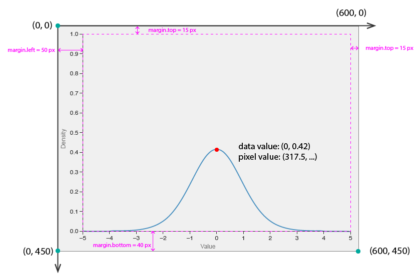
data_to_pixel_y <- function(data_y) {
return(-395 * data_y + 410)
}
data_to_pixel_x <- function(data_x) {
return (53.5 * data_x + 317.5)
}We can verify whether the above functions actually hold by checking the transformed results with the captured pixel coordinates. The results look good so I am skipping this part.
Code
task_df %>% select(location.x, location.y, pixel.x, pixel.y) %>%
mutate(calculated.x = sapply(location.x, data_to_pixel_x),
calculated.y = sapply(location.y, data_to_pixel_y)) %>%
mutate(x_diff = round(pixel.x - calculated.x, 2),
y_diff = round(pixel.y - calculated.y, 2)) %>%
pull(y_diff)We map from pixel coordinates to physical distances by using the pixelsPerMM parameter we captured during the calibration process.1
1 A small problem here is that during some trials, I got impatient and didn’t fully do the calibration and just went with whatever default solutions I had. TLDR — for some trials, the pixelsPerMM value is 3.27. For some trials, it’s 3.73. To avoid confusion, I am manually creating a custom dataframe here but for future purposes, this should not be created by hand.
Some of the prolificId are quite long, and that’s because I was debugging an issue related to ReCAPTCHA.
df %>% filter(participantId %in% ids) %>%
filter(grepl("pixelsPerMM", responseId) | grepl("prolificId", responseId)) %>%
select(participantId, responseId, answer) %>%
pivot_wider(names_from = responseId, values_from = answer)For the sake of this analysis, I am manually creating and using a custom pixel_to_mm data frame.
p <- df %>% filter(participantId %in% ids) %>%
filter(grepl("pixelsPerMM", responseId) | grepl("prolificId", responseId)) %>%
select(participantId, responseId, answer) %>%
pivot_wider(names_from = responseId, values_from = answer) %>%
pull(participantId)
# custom dataframe
pixel_to_mm <- data.frame(participantId = p,
pixelToMM = c(3.73, 3.27, 3.27, 5.03, 3.73, 3.25, 3.73, 3.27, 3.73, 3.27)
)Now that we know what the pixelsPerMM parameter is, we can write functions that transform pixel values into physical distances (measured in mm). Note that we need to do some transforms2 because of the way direction works in svgs are counter-intuitive …:
2 … specifically, distance to the x-axis would be the y-coordinate, which would be 410 - pixel.y. Distance to the y-axis would be the x-coordinate, which would be pixel.x - margin.left.
# define functions
pixel_to_phy_x <- function(pixel, pxMM){
(pixel - 50) * pxMM
}
pixel_to_phy_y <- function(pixel, pxMM){
(410 - pixel) * pxMM
}Now that we can calculate physical distances, we can transform them into visual angles since we know how far the participant is sitting away from the screen (dist_to_screen).3
3 Again, from some test trials, I didn’t fully do the calibration tasks, so I am again manually defining a dataframe here.
# custom data frame
vis_distance <- data.frame(participantId = p,
dist_to_screen = c(426, 502, 500, 495, 485, 987, 635, 500, 479, 563))We use the following equation to obtain the visual angle:
\[\text{visual angle} = 2 \times \text{tan}^{-1}\left( \frac{\text{size}}{ 2 \times \text{distance to screen}} \right)\]
# corresponding function
vis_angle <- function(size, distance){
return(2 * atan(size / (2 * distance)))
}Now that these functions are ready, we are ready to perform data analysis in all possible spaces — data space, pixel space, visual angle space.
Task 1 — PDF Median — Split area into equal halves
task_df %>% filter(grepl("task1", trialId)) %>%
mutate(left_area = psgt(location.x, param.mu, param.sigma,
param.lambda, param.p, param.q, mean.cent = F)) %>%
select(-trialId, -slider.x, -slider.y) %>%
head(5)Let’s see if there’s any relation between lambda, p, q, and area to the left of the selection:
# first calculate data for plotting
d <- task_df %>% filter(grepl("task1", trialId)) %>%
mutate(left_area = psgt(location.x, param.mu, param.sigma,
param.lambda, param.p, param.q, mean.cent=F))
Weird missing data error
There is one row that contains NA value, which is weird …
d %>% select(-slider.x, -slider.y) %>% filter(if_any(everything(), is.na))# let's try to plot this
x_val <- seq(-5, 5, 0.01)
y_val <- dsgt(x_val, mu = -0.3, sigma = 0.8, lambda = 0, p = 2.9, q = 46.9, mean.cent=F)
data.frame(x = x_val, y = y_val) %>%
ggplot(aes(x=x, y=y)) +
geom_line() +
theme_minimal() +
xlim(-5, 5) +
ylim(0, 1)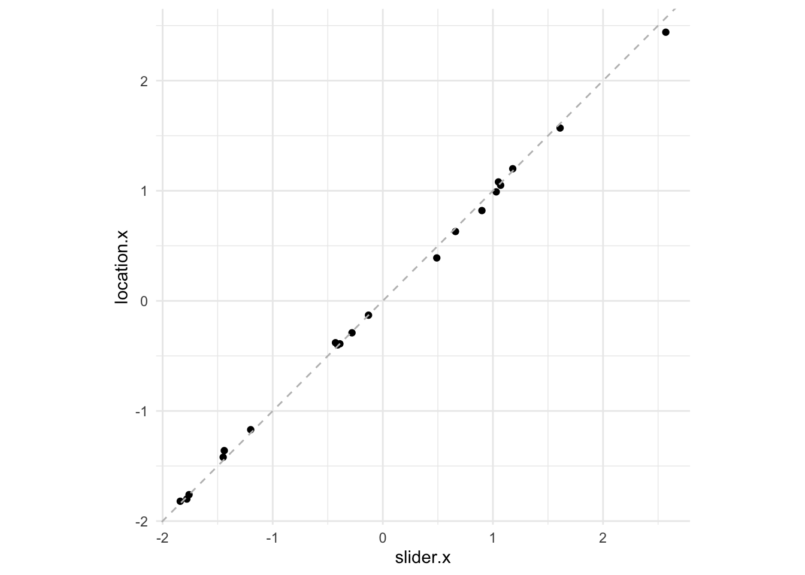
# let's try cdf
y_val <- psgt(x_val, mu = -0.3, sigma = 0.8, lambda = 0, p = 2.9, q = 46.9, mean.cent=F)
data.frame(x = x_val, y = y_val) %>%
ggplot(aes(x=x, y=y)) +
geom_line() +
theme_minimal() +
xlim(-5, 5) +
ylim(0, 1)
The above all seems to be working … Let’s calculate left area separately:
psgt(-0.3, mu = -0.3, sigma = 0.8, lambda = 0, p = 2.9, q = 46.9, mean.cent=F)[1] NaNIt is unclear why the above gives me a NaN answer … Moving on …
There seems to be some relation between lambda and left_area:
Code
d %>% select(param.lambda, left_area) %>%
ggplot(aes(x = param.lambda, y = left_area)) +
geom_point(alpha = 0.5) +
theme_minimal() + xlim(-1, 1) + ylim(0, 1) +
geom_hline(yintercept = 0.5, linetype="dashed", color="gray")Warning: Removed 1 row containing missing values or values outside the scale range
(`geom_point()`).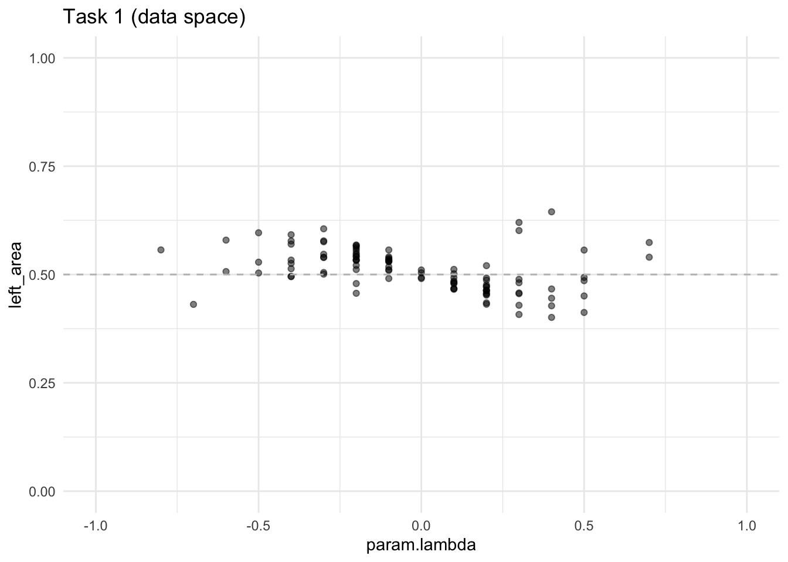
Code
d %>% select(param.p, left_area) %>%
ggplot(aes(x = param.p, y = left_area)) +
geom_point(alpha = 0.5) +
theme_minimal() +
ylim(0, 1) +
geom_hline(yintercept = 0.5, linetype="dashed", color="gray")Warning: Removed 1 row containing missing values or values outside the scale range
(`geom_point()`).Code
d %>% select(param.q, left_area) %>%
ggplot(aes(x = param.q, y = left_area)) +
geom_point(alpha = 0.5) +
theme_minimal() +
ylim(0, 1) +
geom_hline(yintercept = 0.5, linetype="dashed", color="gray")Warning: Removed 1 row containing missing values or values outside the scale range
(`geom_point()`).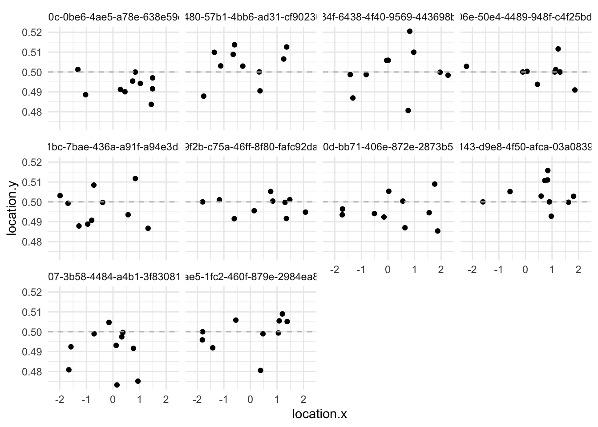
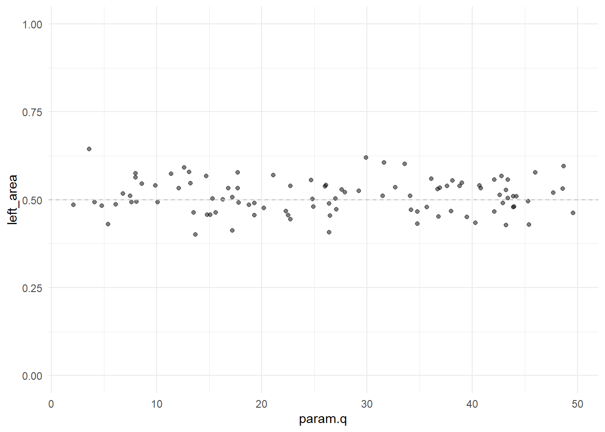
There does not seem to be any relationship between p, q and area.
Caution
For area, we could potentially calculate the physical space it occupies using pixelToMM. But what is the “visual angle” of area??
Task 2 — PDF Mode — Find highest point on the curve
- This is the task that we can do all sorts of calculations …
Code
x_val <- seq(-5, 5, 0.01)
y_val <- dsgt(x_val, mu = 1.7, sigma = 1.4, lambda = -0.5, p = 3.5, q = 7.5, mean.cent=F)
data.frame(x = x_val, y = y_val) %>%
ggplot(aes(x = x, y = y)) +
geom_line() +
theme_minimal() +
xlim(-5, 5) + ylim(0, 1)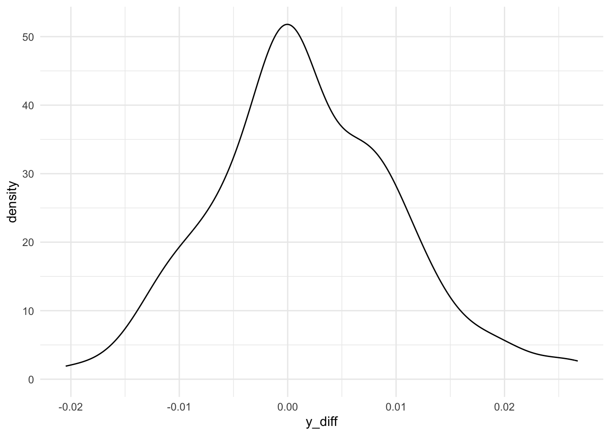
# Trying out numDeriv
numDeriv::grad(dsgt, 1, mu = 1.7, sigma = 1.4, lambda = -0.5, p = 3.5, q = 7.5, mean.cent=F)[1] 0.005399378atan(numDeriv::grad(dsgt, 1, mu = 1.7, sigma = 1.4, lambda = -0.5, p = 3.5, q = 7.5, mean.cent=F))[1] 0.005399325numDeriv::grad(dsgt, 0, mu = 1.7, sigma = 1.4, lambda = -0.5, p = 3.5, q = 7.5, mean.cent=F)[1] 0.04467183atan(numDeriv::grad(dsgt, 0, mu = 1.7, sigma = 1.4, lambda = -0.5, p = 3.5, q = 7.5, mean.cent=F))[1] 0.04464215numDeriv::grad(dsgt, -1, mu = 1.7, sigma = 1.4, lambda = -0.5, p = 3.5, q = 7.5, mean.cent=F)[1] 0.09215372atan(numDeriv::grad(dsgt, -1, mu = 1.7, sigma = 1.4, lambda = -0.5, p = 3.5, q = 7.5, mean.cent=F))[1] 0.09189418Let’s see what the grad values are at the selected value of x and at the answer:
task_df %>% filter(grepl("task2", trialId)) %>%
mutate(grad.x = numDeriv::grad(dsgt, location.x, mu = param.mu, sigma = param.sigma,
lambda = param.lambda, p = param.p, q = param.q, mean.cent=F),
grad.ans = numDeriv::grad(dsgt, param.mu, mu = param.mu, sigma = param.sigma,
lambda = param.lambda, p = param.p, q = param.q, mean.cent=F),
) %>%
select(grad.x, grad.ans) %>%
ggplot(aes(x = grad.x, y = grad.ans)) +
geom_point(alpha = 0.5) +
theme_minimal()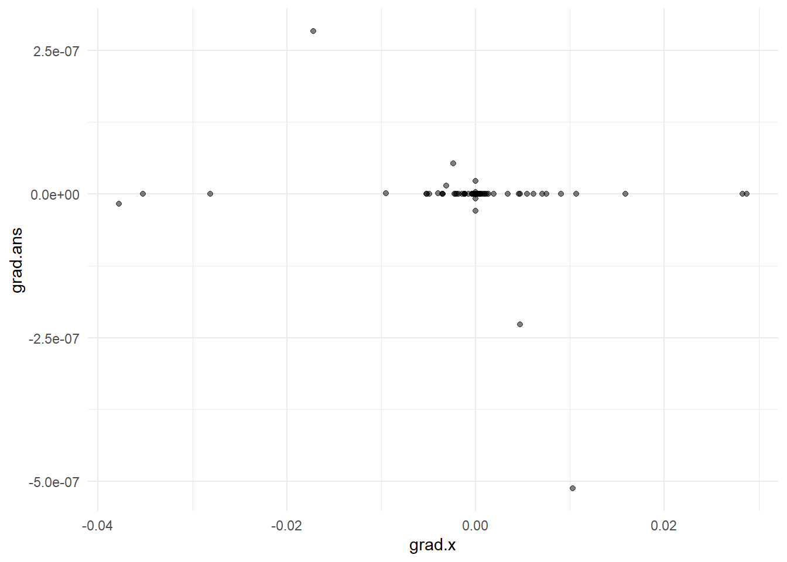
task_df %>% filter(grepl("task2", trialId)) %>%
mutate(grad.x = numDeriv::grad(dsgt, location.x, mu = param.mu, sigma = param.sigma,
lambda = param.lambda, p = param.p, q = param.q, mean.cent=F),
grad.ans = numDeriv::grad(dsgt, param.mu, mu = param.mu, sigma = param.sigma,
lambda = param.lambda, p = param.p, q = param.q, mean.cent=F),
) %>%
mutate(atan.grad.x = atan(grad.x),
atan.grad.ans = atan(grad.ans)) %>%
select(atan.grad.x, atan.grad.ans) %>%
ggplot(aes(x = atan.grad.x, y = atan.grad.ans)) +
geom_point(alpha = 0.5) +
theme_minimal()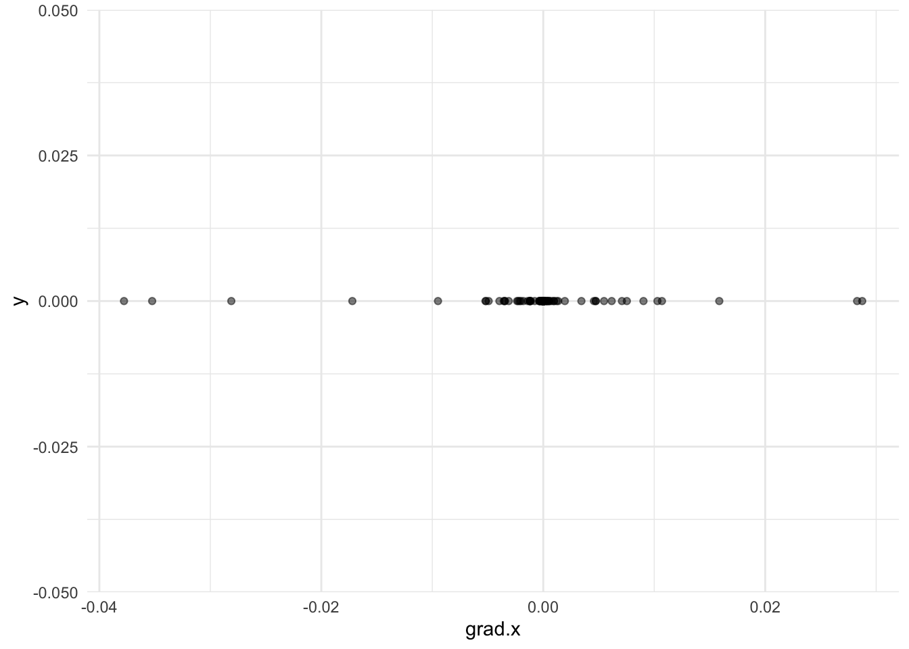
- For really small values (like the ones we get above) it doesn’t matter whether we’re looking at the gradient or the angle between the slope and the horizontal line (calculated using
atan)
We can also plot the distribution of error, first for x and then for y (everything in data space):
Code
task_df %>% filter(grepl("task2", trialId)) %>%
mutate(answer.x = param.mu,
answer.y = dsgt(x=param.mu, mu = param.mu, sigma=param.sigma,
lambda=param.lambda, p=param.p, q=param.q, mean.cent = F)) %>%
select(participantId, location.x, location.y, answer.x, answer.y) %>%
mutate(x_diff = location.x - answer.x) %>%
ggplot(aes(x = x_diff)) + geom_density() + theme_minimal()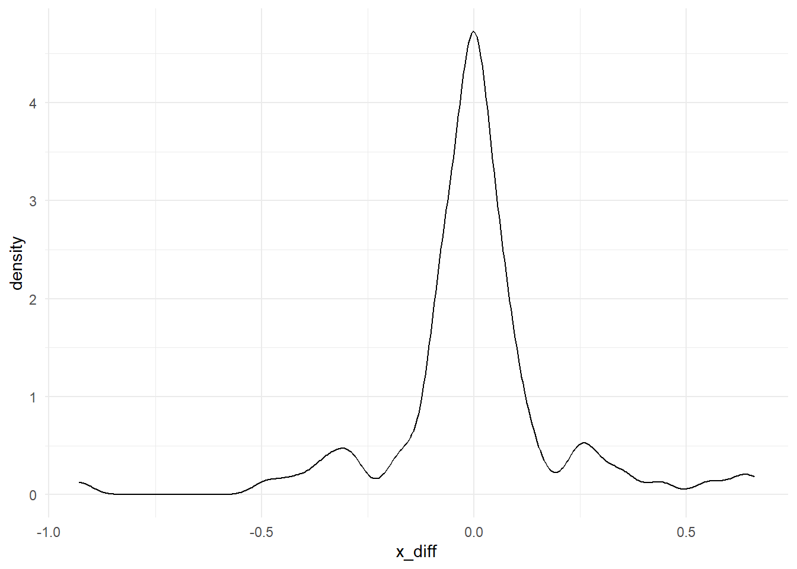
Code
task_df %>% filter(grepl("task2", trialId)) %>%
mutate(answer.x = param.mu,
answer.y = dsgt(x=param.mu, mu = param.mu, sigma=param.sigma,
lambda=param.lambda, p=param.p, q=param.q, mean.cent = F)) %>%
select(participantId, location.x, location.y, answer.x, answer.y) %>%
mutate(y_diff = location.y - answer.y) %>%
ggplot(aes(x = y_diff)) + geom_density() + theme_minimal()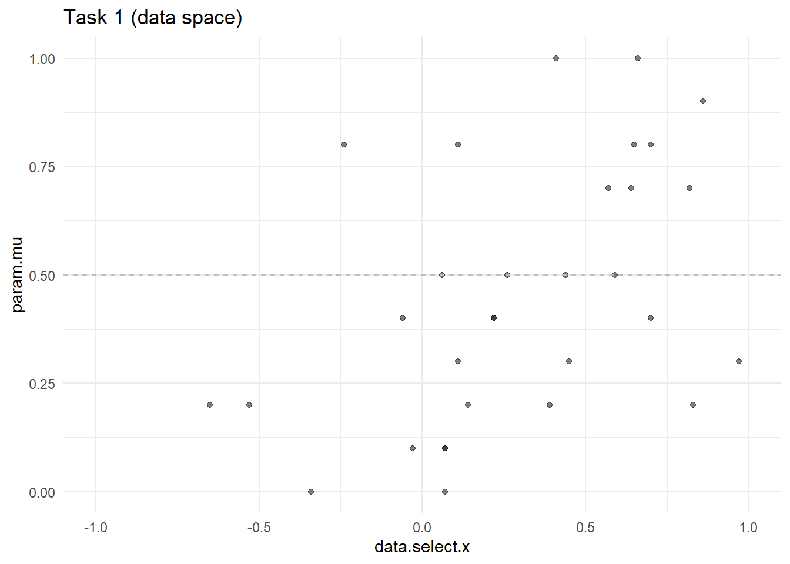
What about error in gradient space?
task_df %>% filter(grepl("task2", trialId)) %>%
mutate(grad.x = numDeriv::grad(dsgt, location.x, mu = param.mu, sigma = param.sigma,
lambda = param.lambda, p = param.p, q = param.q, mean.cent=F),
grad.ans = numDeriv::grad(dsgt, param.mu, mu = param.mu, sigma = param.sigma,
lambda = param.lambda, p = param.p, q = param.q, mean.cent=F),
) %>%
mutate(diff = grad.ans - grad.x) %>%
ggplot(aes(x = diff)) +
geom_density() +
theme_minimal()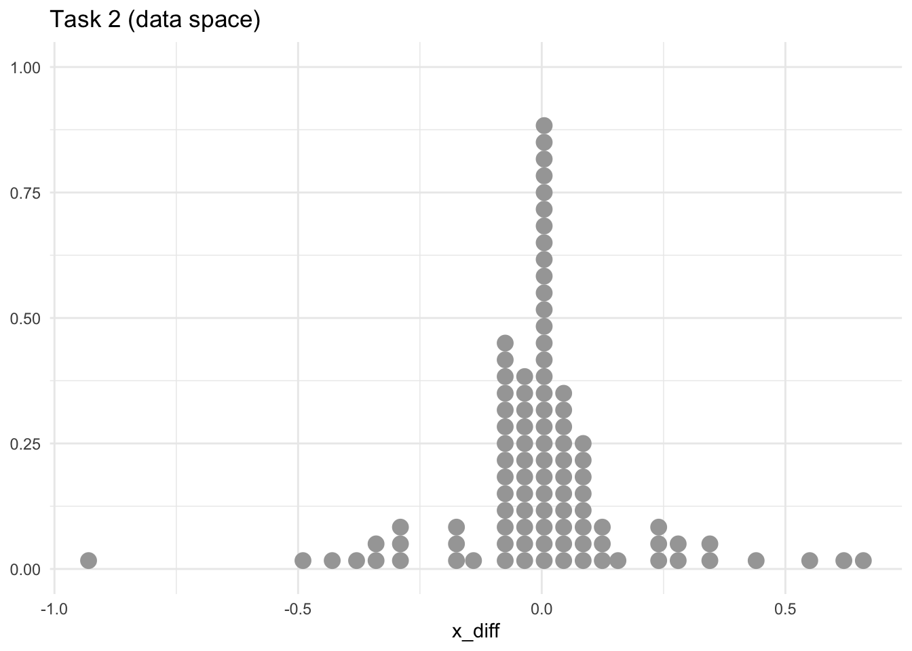
Task 3 — CDF Median — find point where y == 0.5
First look at the data and plot things in data space:
task_df %>% filter(grepl("task3", trialId)) %>%
select(-trialId) %>%
head(5)Code
task_df %>% filter(grepl("task3", trialId)) %>%
ggplot(aes(x = location.x, y = location.y)) +
geom_point() +
theme_minimal() +
geom_hline(yintercept = 0.5, linetype="dashed", color="gray") +
labs(title="Task 3 (Data space)")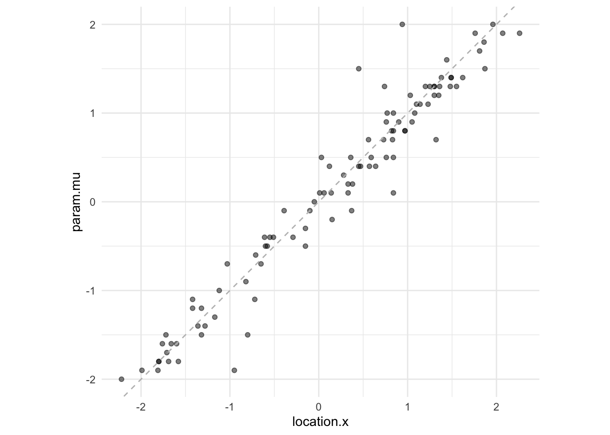
What if we were to look at things from physical space?
d <- task_df %>% filter(grepl("task3", trialId)) %>%
left_join(pixel_to_mm, by = join_by(participantId)) %>%
left_join(vis_distance, by = join_by(participantId)) %>%
mutate(phy.x = pixel_to_phy_x(pixel.x, pixelToMM),
phy.y = pixel_to_phy_y(pixel.y, pixelToMM)) Code
d %>%
ggplot(aes(x = phy.x, y = phy.y)) +
geom_point() +
theme_minimal() +
labs(x = "physical distance (x) in mm",
y = "physical distance (y) in mm",
title = "Task 3 (Physical space)")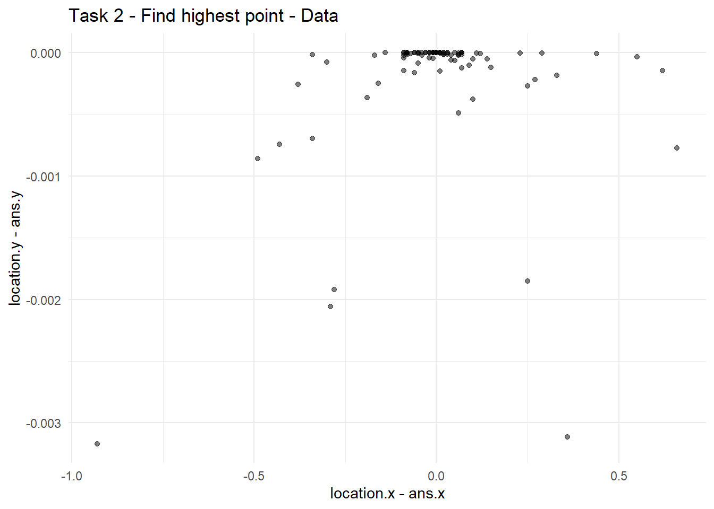
We can see there are different variations, because depending on the pixelPerMM parameter, participants are seeing things of different size.
Next, let’s see where things are at in terms of visual angle:
Code
task_df %>% filter(grepl("task3", trialId)) %>%
left_join(pixel_to_mm, by = join_by(participantId)) %>%
left_join(vis_distance, by = join_by(participantId)) %>%
mutate(phy.x = pixel_to_phy_x(pixel.x, pixelToMM),
phy.y = pixel_to_phy_y(pixel.y, pixelToMM),
va.x = vis_angle(phy.x, dist_to_screen),
va.y = vis_angle(phy.y, dist_to_screen),) %>%
ggplot(aes(x = va.x, y = va.y)) +
geom_point(alpha = 0.8) +
theme_minimal() +
labs(x = "visual angle (x)",
y = "visual angle (y)",
title = "Task 3") +
coord_equal()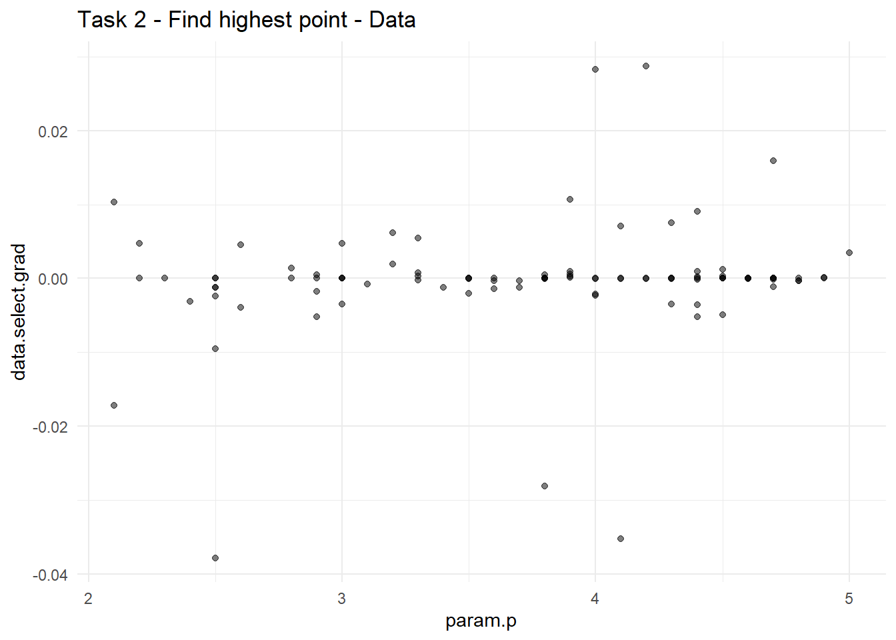
What about the difference between the visual angle of the selection and the visual angle of the actual answer?
task_df %>% filter(grepl("task3", trialId)) %>%
left_join(pixel_to_mm, by = join_by(participantId)) %>%
left_join(vis_distance, by = join_by(participantId)) %>%
mutate(ans.pixel.y = data_to_pixel_y(0.5),
phy.y = pixel_to_phy_y(pixel.y, pixelToMM),
ans.phy.y = pixel_to_phy_y(ans.pixel.y, pixelToMM),
va.y = vis_angle(phy.y, dist_to_screen),
ans.va.y = vis_angle(ans.phy.y, dist_to_screen)
) %>%
select(va.y, ans.va.y)Code
task_df %>% filter(grepl("task3", trialId)) %>%
left_join(pixel_to_mm, by = join_by(participantId)) %>%
left_join(vis_distance, by = join_by(participantId)) %>%
mutate(ans.pixel.y = data_to_pixel_y(0.5),
phy.y = pixel_to_phy_y(pixel.y, pixelToMM),
ans.phy.y = pixel_to_phy_y(ans.pixel.y, pixelToMM),
va.y = vis_angle(phy.y, dist_to_screen),
ans.va.y = vis_angle(ans.phy.y, dist_to_screen)
) %>%
select(va.y, ans.va.y) %>%
ggplot(aes(x = va.y, y = ans.va.y)) +
geom_point(alpha = 0.5) +
theme_minimal() +
geom_abline(slope = 1, intercept = 0, linetype="dashed", color="gray")
- Indeed, Alex’s comment about getting more precise outcome is right.
Task 4 — CDF Mode — Find slope
Recall that mode is just param.mu based on our definition. However, it is unclear how slope in the data sense transforms to slope in the physical / visual angle sense.
Let us first plot the slope at the selected x value, as well as the slope when x = mode:
Code
task_df %>% filter(grepl("task4", trialId)) %>%
mutate(slope = dsgt(location.x, param.mu, param.sigma, param.lambda, param.p, param.q, mean.cent=F),
ans = dsgt(param.mu, param.mu, param.sigma, param.lambda, param.p, param.q, mean.cent=F)) %>%
ggplot(aes(x = slope, y = ans)) +
geom_point(alpha = 0.5) +
theme_minimal() +
geom_abline(slope = 1, intercept = 0, linetype = "dashed", color="gray")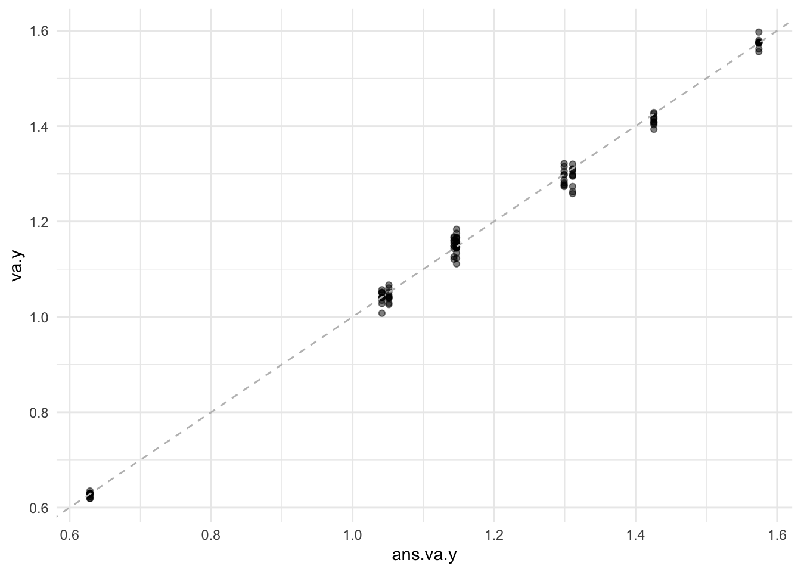
Things track very well, except for those some outliers4
4 Maryam took slope to mean the smallest value of x where it starts turning.
If we were to plot the value of the selected x and the actual mode of the distribution, we get something that gives more variation:
Code
task_df %>% filter(grepl("task4", trialId)) %>%
ggplot(aes(x = location.x, y = param.mu)) +
geom_point(alpha=0.8) + theme_minimal() +
geom_abline(slope = 1, intercept = 0, linetype="dashed", color="gray") +
coord_equal()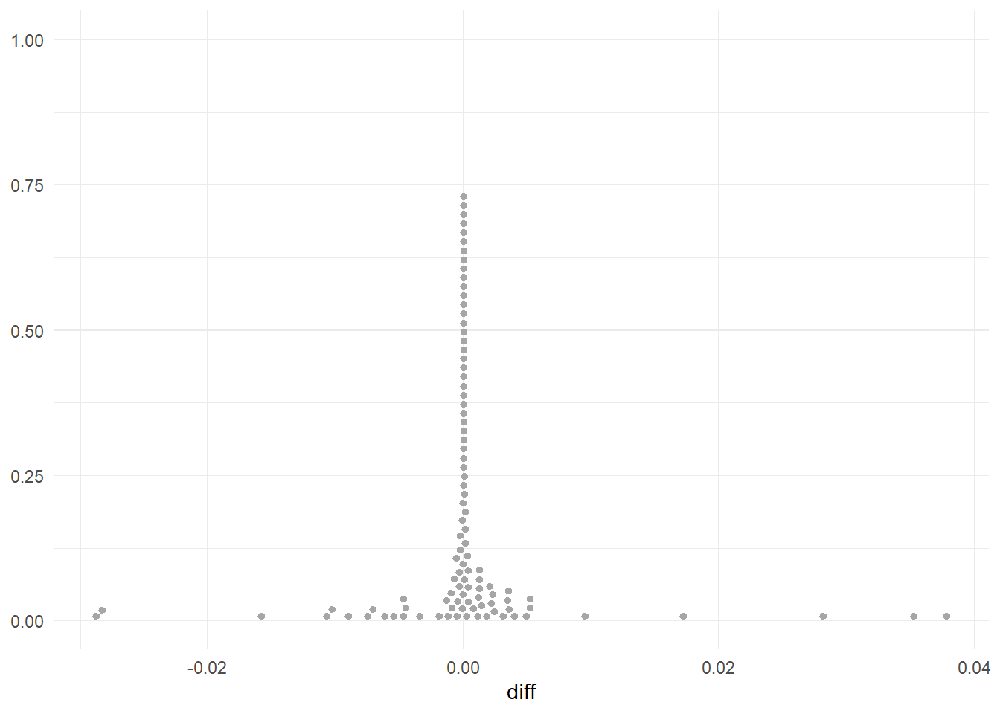
- The outliers here were Maryam’s answers; she was interpreting slope to mean the first angle
Task 5 — Project from dot to axes
# first we get the data frame for task 5
task_5 <- df %>% filter(grepl("task5", trialId)) %>%
filter(grepl("test", trialId)) %>%
select(participantId, trialId, responseId, answer) %>%
mutate(answer = as.numeric(answer)) %>%
pivot_wider(names_from = responseId, values_from = answer, names_repair = "universal") %>%
separate_wider_delim(trialId, delim="_", names = c("TaskType", "type", "id")) %>%
select(-type)New names:
• `slider-x` -> `slider.x`
• `slider-y` -> `slider.y`
• `location-x` -> `location.x`
• `location-y` -> `location.y`task_5 %>% head(5)How accurate where the xs?
Code
task_5 %>%
ggplot(aes(x = slider.x, y = location.x)) +
geom_point(alpha=0.5) +
theme_minimal() +
geom_abline(intercept = 0, slope = 1, color = "gray", linetype = "dashed") +
coord_equal() +
labs(title="Task 5 - X (Data space)")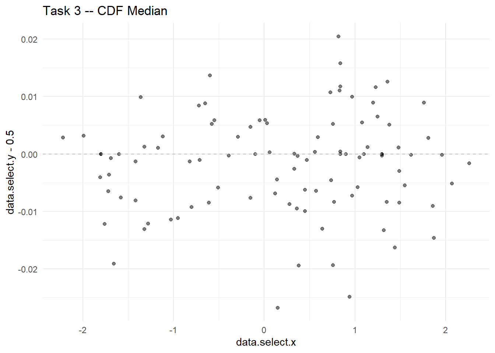
Code
task_5 %>% left_join(pixel_to_mm, by = join_by(participantId)) %>%
select(slider.x, location.x, pixelToMM) %>%
mutate(phy.x = pixel_to_phy_x(data_to_pixel_x(slider.x), pixelToMM),
ans.phy.x = pixel_to_phy_x(data_to_pixel_x(location.x), pixelToMM)) %>%
ggplot(aes(x = phy.x, y = ans.phy.x)) +
geom_point(alpha = 0.5) +
theme_minimal() +
coord_equal() +
labs(x = "Physical distance (mm)",
y = "Answer distance (mm)",
title = "Task 5 - X (Physical space)") +
geom_abline(slope = 1, intercept = 0, linetype="dashed", color="gray")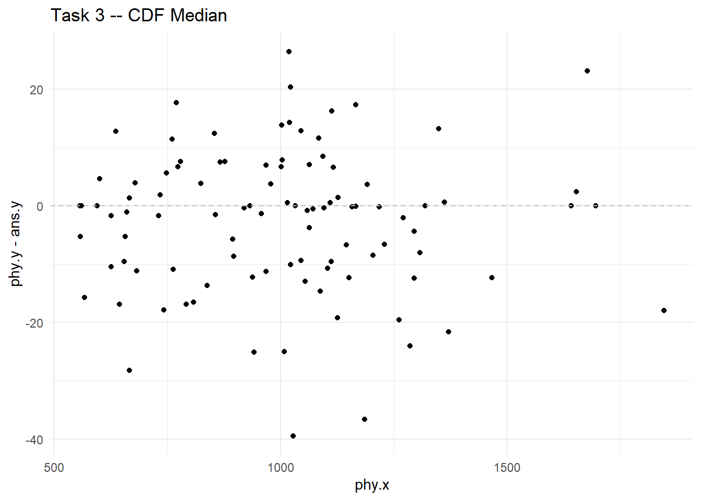
Code
task_5 %>% left_join(pixel_to_mm, by = join_by(participantId)) %>%
left_join(vis_distance, by = join_by(participantId)) %>%
select(slider.x, location.x, pixelToMM, dist_to_screen) %>%
mutate(phy.x = pixel_to_phy_x(data_to_pixel_x(slider.x), pixelToMM),
ans.phy.x = pixel_to_phy_x(data_to_pixel_x(location.x), pixelToMM),
va.x = vis_angle(phy.x, dist_to_screen),
ans.va.x = vis_angle(ans.phy.x, dist_to_screen)) %>%
ggplot(aes(x = va.x, y = ans.va.x)) +
geom_point(alpha = 0.5) +
theme_minimal() +
coord_equal() +
labs(x = "Visual Angle of x coordinate",
y = "Visual Angle of answer x coordinate",
title = "Task 5 - X (Visual Angle)") +
geom_abline(slope = 1, intercept = 0, linetype="dashed", color="gray")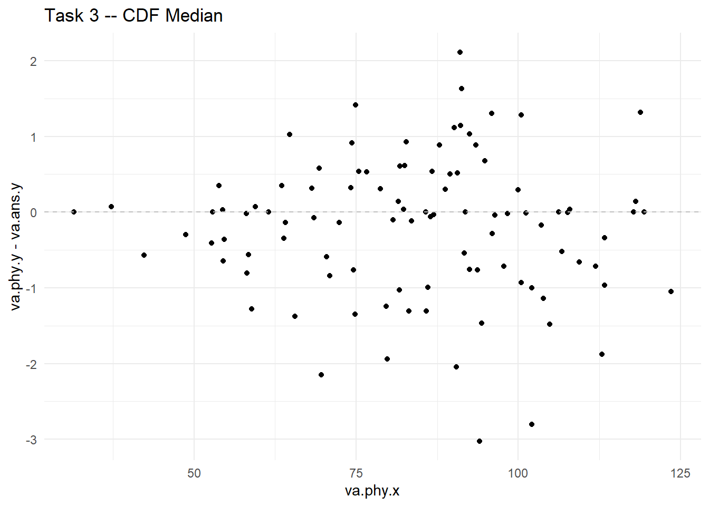
How about the ys?
Code
task_5 %>%
ggplot(aes(x = slider.y, y = location.y)) +
geom_point(alpha=0.5) +
theme_minimal() +
geom_abline(intercept = 0, slope = 1, color = "gray", linetype = "dashed") +
coord_equal() +
labs(title="Task 5 - Y (Data space)")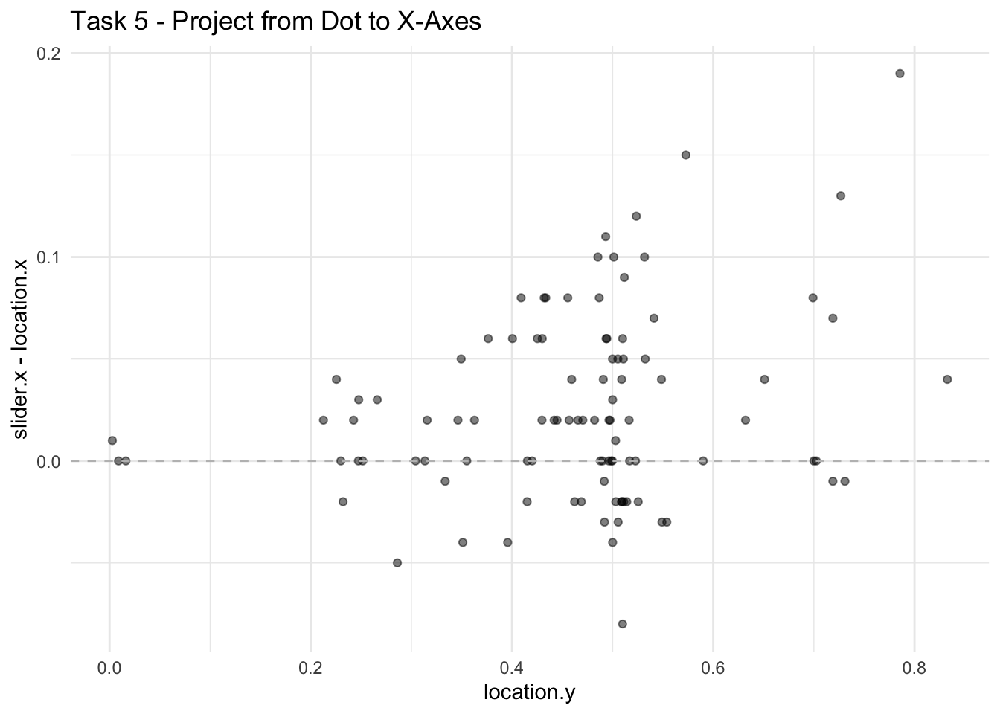
Code
task_5 %>% left_join(pixel_to_mm, by = join_by(participantId)) %>%
# left_join(vis_distance, by = join_by(participantId)) %>%
select(slider.y, location.y, pixelToMM) %>%
mutate(phy.y = pixel_to_phy_y(data_to_pixel_y(slider.y), pixelToMM),
ans.phy.y = pixel_to_phy_y(data_to_pixel_y(location.y), pixelToMM)) %>%
ggplot(aes(x = phy.y, y = ans.phy.y)) +
geom_point(alpha = 0.5) +
theme_minimal() +
coord_equal() +
labs(x = "Physical distance (mm)",
y = "Answer distance (mm)",
title = "Task 5 - Y (Physical space)") +
geom_abline(slope = 1, intercept = 0, linetype="dashed", color="gray")
Code
task_5 %>% left_join(pixel_to_mm, by = join_by(participantId)) %>%
left_join(vis_distance, by = join_by(participantId)) %>%
select(slider.y, location.y, pixelToMM, dist_to_screen) %>%
mutate(phy.y = pixel_to_phy_y(data_to_pixel_y(slider.y), pixelToMM),
ans.phy.y = pixel_to_phy_y(data_to_pixel_y(location.y), pixelToMM),
va.y = vis_angle(phy.y, dist_to_screen),
ans.va.y = vis_angle(ans.phy.y, dist_to_screen)) %>%
ggplot(aes(x = va.y, y = ans.va.y)) +
geom_point(alpha = 0.5) +
theme_minimal() +
coord_equal() +
labs(x = "Visual Angle of x coordinate",
y = "Visual Angle of answer x coordinate",
title = "Task 5 - Y (Visual Angle)") +
geom_abline(slope = 1, intercept = 0, linetype="dashed", color="gray")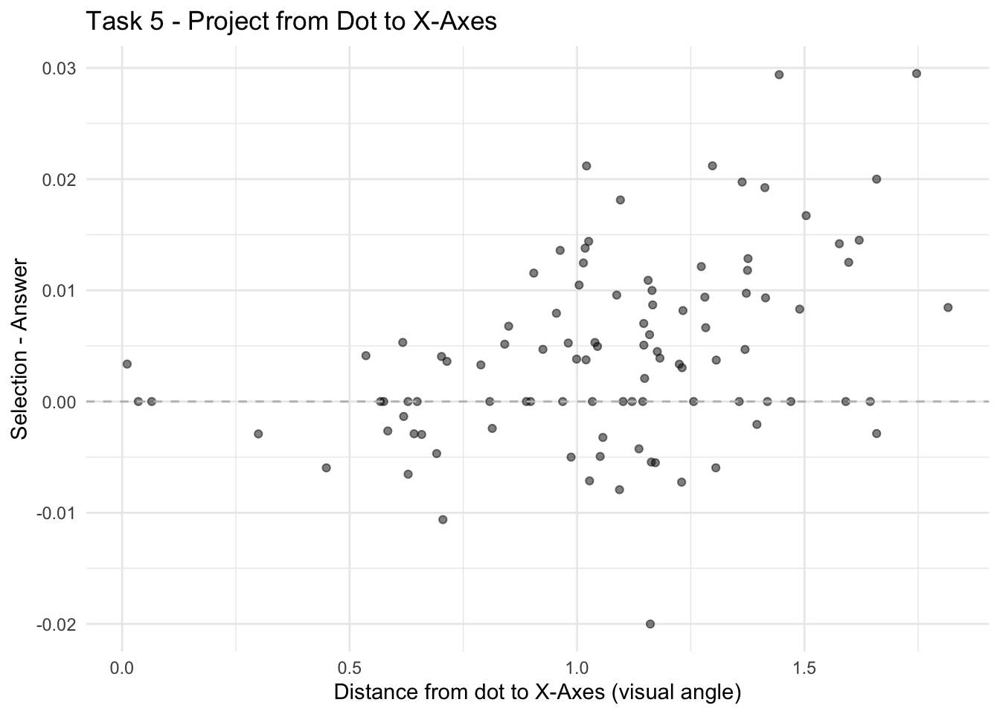